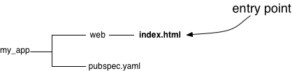

Imports and Your App’s Directory Structure
You have some flexibility about how you structure your polymer.dart app, as long as you adhere to pub package layout conventions.
The structure of your app’s directories affects how your app’s code imports other code, whether from your own app or from a different package.
Possible app structures
As the following figure shows,
a very simple polymer.dart app might have only a single HTML file
under web, plus a pubspec.yaml file.

By default, each HTML file under web is an entry point—a
page that the user can navigate to.
Apps often have additional files under lib.

Both the web and lib directories can contain HTML, CSS, Dart,
image, and other files.
Generally, the assets (such as images)
that an HTML or Dart files uses
are near that file in the directory structure.
Importing assets
Dart, HTML, and CSS files often import assets, such as other Dart files, HTML files, CSS files, and images.
The syntax for importing assets depends on the following:
- Whether the importing file is a Dart file
- Whether the importing file is an entry point
- Whether the importing file is under
webor underlib - Whether the imported file is under the same top-level directory
(
weborlib) or in another package
Within a package, files under web can import files under
either web or lib.
However, files under lib can import only files under lib.
Both web and lib files can import files from
other packages.
The examples in the following sections use
a package named a that depends on the polymer package
and a package named b.
The a and b packages have
this directory structure:
Into web/ from web/
Within web, both Dart and non-Dart files use relative paths when
importing other files under web.
Into a Dart file
// web/a1.dart imports web/a3/a3.dart import 'a3/a3.dart';
Into a non-Dart file
<!-- web/a1_ep.html imports web/a3/a3.html --> <link rel="import" href="a3/a3.html">
Into web/ from lib/
Within web, both Dart and non-Dart files use package paths
when importing from lib—even
when those files are in the same package.
Dart package paths start with
package:package_name/,
while non-Dart package paths start with
[path_to_entry_point/]packages/package_name/.
For package_name use the value of the
name field in pubspec.yaml.
Into a Dart file
The Dart code is always the same,
no matter how deeply under web the Dart file is nested.
// web/a1.dart imports lib/a4.dart import 'package:a/a4.dart';
Into an entry point
Entry points import lib files using a path
that starts with packages/:
<!-- web/a1_ep.html imports lib/a4.html --> <link rel="import" href="packages/a/a4.html"> <!-- web/a2/a2_ep.html imports lib/a4.html --> <link rel="import" href="packages/a/a4.html">
Into a non-Dart, non-entry point
Non-entry points must walk out to the entry point that imports them,
and then use the path (starting with packages/)
that the entry point would use to import the file.
<!-- web/a3/a3.html
(imported by the entry point web/a1_ep.html)
imports lib/a5/a5.html -->
<link rel="import" href="../packages/a/a5/a5.html">
Into lib/ from lib/
Within lib, both Dart and non-Dart files can use relative paths
to import assets that are also under lib.
Dart files can also use package: paths.
Into a Dart file
Dart files under lib
often use package: paths to import assets under lib:
// lib/a5/a6/a6.dart imports lib/a4.dart import 'package:a/a4.dart';
Relative paths are another option:
// lib/a5/a5.dart imports lib/a5/a6/a6.dart import 'a6/a6.dart';
Into a non-Dart file
Non-Dart files under lib must use relative paths
to import assets under lib:
<!-- lib/a5/a6/a6.html imports lib/a4.html --> <link rel="import" href="../../a4.html">
From another package
Importing files from another package is easy for Dart files, and a little more complicated for non-Dart files.
Within the other package,
only the files under lib are available for import.
Just like for paths within your own package,
lib isn’t part of the import path.
Into a Dart file
Dart files import assets from other packages like this:
// Any .dart file in package a imports lib/b.dart from package b import 'package:b/b.dart';
A common example is importing polymer.dart
from the polymer package:
import 'package:polymer/polymer.dart';
Into a non-Dart file under web/
The rules are exactly the same
as the rules for importing from the same package’s lib directory.
Entry points use a path
that starts with packages/:
<!-- web/a1_ep.html imports lib/b.html from package b --> <link rel="import" href="packages/b/b.html">
Non-Dart, non-entry points under web must first walk out
to the entry point’s directory.
<!-- web/a3/a3.html
(imported by the entry point web/a1_ep.html)
imports polymer's polymer.html -->
<link rel="import" href="../packages/polymer/polymer.html">
Into a non-Dart file under lib/
Non-Dart files under lib must walk up
to the top of the package plus one.
The extra ../ is necessary because code in
lib/path
appears in the importing package as
packages/package_name/path.
<!-- lib/a4.html imports lib/b.html from package b --> <link rel="import" href="../../packages/b/b.html"> <!-- lib/a5/a5.html imports lib/b.html from package b --> <link rel="import" href="../../../packages/b/b.html"> <!-- lib/a5/a6/a6.html imports polymer's polymer.html --> <link rel="import" href="../../../../packages/polymer/polymer.html">
Testing your imports
Bad import syntax sometimes works—at least until you deploy your app. A good, quick test of your imports is whether your untransformed Polymer code works in Dartium.
To test your import syntax, run your app in Dartium using either of these approaches:
-
Use a file URL in Dartium. Start Dartium from the command line, specifying
--allow-file-access-from-filesand the file URL for an entry point:/path/to/dartium/chromium --allow-file-access-from-files file:///path/to/web/path-to-entry-point
For example, on a Mac:
~/dart/chromium/Chromium.app/Contents/MacOS/Chromium --allow-file-access-from-files file:///Users/me/a/web/index.html
-
Use a simple HTTP server. You can run the server in the top directory of your app, and point Dartium to the URL of an entry point. For example:
-
cd <top directory of app> -
python -m SimpleHTTPServer - In Dartium, browse to
http://localhost:port/web/path-to-entry-point.
Example: http://localhost:8000/web/index.html
-
The rules behind the import syntax
The import syntax is the result of some rules that polymer.dart defines, in addition to what pub stipulates:
-
Every entry point has a
packagesdirectory, which is why its package import paths start withpackages/. -
Non-entry-point files under
webuse thepackagesdirectory of the entry point that imports them. -
Two entry points in different directories can’t import the same non-entry-point
webfile. (Instead, you can move the non-entry-point file tolib.)
The rules are easier to follow if
you know how pub get places files.
How the directory structure changes
Recall the directory structure from before:
When you run pub get at the top of package a,
a packages directory appears under each directory in web.
Note that no lib directory is under the packages directory.
When you launch web/a1_ep.html in Dartium,
Dartium loads package imports from web/packages/.
When you launch web/a2/a2_ep.html in Dartium,
the package imports come from web/a2/packages/.
However, when web/a3/a3.html imports lib/a5/a5.html,
as a non-entry point a3.html must
walk up to the packages directory that
lives next to its entry point (a1_ep.html)
and then load the file from there:
../packages/a/a5/a5.html.
Because pub generates symlinks to the packages directory under a3,
you might be tempted to write packages/a/a5/a5.html,
but that’s incorrect.
When a5/a5.html (originally under lib)
imports b.html
(also originally under lib, but in the b package),
a5.html must first walk out to be just above
the top-level packages directory.
It’s under packages/a/a5, so it must walk up 3 directories
before it can continue the path with packages:
../../../packages/polymer/polymer.html
Using correct import syntax
allows the code in lib to be used by your package,
as well as by code outside your package,
without changes.
Why the rules exist
The motivation behind polymer.dart’s import rules is that URLs must work under many scenarios at once:
-
URLs must work in Dartium without any code transformation: resolving the path in the context of a simple HTTP server, or using
file:///URLs, should yield a valid path to assets. Thepackagesdirectory is safe to use because pub already creates it next to the entry points of your application. -
URLs must be canonical. Multiple URLs reaching the same asset must resolve to the same absolute URL, whether the URL comes from a Dart file or an HTML file. If you use the correct import syntax, then the
polymertransformer ensures that the URLs are canonical.For example, say you have an import like this:
<link rel="import" href="packages/c/c.html">
Also say that
c.htmlhas this:<script type="application/dart" src="c.dart">
If a Dart file also loads
"package:c/c.dart", then a tool needs to make sure that both versions ofc.dartare loaded from the same URL. Otherwise, you may see errors at runtime like “A is not a subtype of A.”When you use the correct import syntax, polymer.dart can detect the pattern in the HTML-import URL that contains
packages/and canonicalize the import by convertingpackages/c/c.dartintopackage:c/c.dartunder the hood. -
URLs must continue to be valid after applications are built. Technically a pub transformer could do this automatically. However, to make sure that code works also in Dartium with a simple HTTP server, the
polymertransformer doesn’t fix URLs; it just detects inconsistencies and produces an error message.
For more information, see Pub Package Layout Conventions and Pub Assets and Transformers.